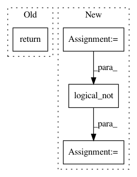

e1a69c7f2f8c0632f6957fbe4970bfa832de6eeb,mvpa2/misc/surfing/volsurf.py,VolSurf,surf_project_weights_nodewise,#VolSurf#Any#,259
Before Change
ps = xyz - pxyz
proj = np.sum(ps * dxyz, axis=1)
return proj / scale
def voxel_count_nifti_image(self, n2v=None):
"""
Returns a NIFTI image indicating how often each voxel is selected.
After Change
weights = np.zeros((self._pial.nvertices,), dtype=pxyz.dtype)
nan_mask = scale == 0
weights[nan_mask] = np.nan
non_nan_mask = np.logical_not(nan_mask)
ps = xyz - pxyz
proj = np.sum(ps * dxyz, axis=1)
weights[non_nan_mask] = proj[non_nan_mask] / scale[non_nan_mask]
In pattern: SUPERPATTERN
Frequency: 3
Non-data size: 4
Instances
Project Name: PyMVPA/PyMVPA
Commit Name: e1a69c7f2f8c0632f6957fbe4970bfa832de6eeb
Time: 2013-01-23
Author: nikolaas.oosterhof@unitn.it
File Name: mvpa2/misc/surfing/volsurf.py
Class Name: VolSurf
Method Name: surf_project_weights_nodewise
Project Name: tensorflow/benchmarks
Commit Name: 2b118fa1419ad5101720af341d2e042e9b99713e
Time: 2018-01-26
Author: tanmingxing@google.com
File Name: scripts/tf_cnn_benchmarks/variable_mgr.py
Class Name: VariableMgrIndependent
Method Name: get_gradients_to_apply
Project Name: HewlettPackard/dlcookbook-dlbs
Commit Name: cec704bd54458bb5b86ca7db4061a5c597fac85e
Time: 2018-03-14
Author: sergey.serebryakov@hpe.com
File Name: python/tf_cnn_benchmarks/variable_mgr.py
Class Name: VariableMgrIndependent
Method Name: get_gradients_to_apply